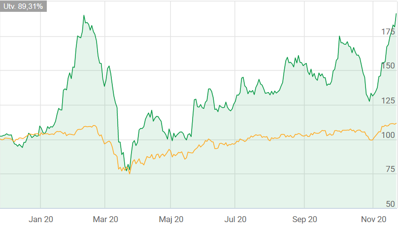
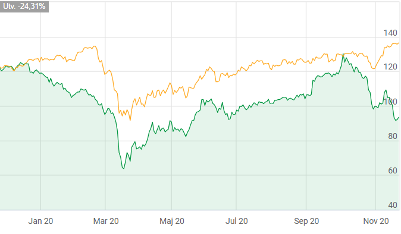
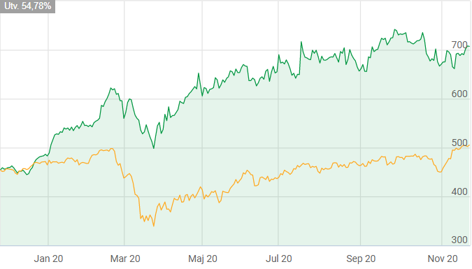

Investerings Rekommendationer

TOBII
Tobii är ett teknikbolag. Bolaget utvecklar tekniska lösningar för eye tracking, som gör det möjligt för datorer att veta vart användaren tittar. Olika lösningar som bolaget utvecklar är för närvarande kommunikationslösningar för personer med rörelsehinder eller kommunikationssvårigheter, samt tillhörande utrustning inom arbetsområdet. Kunderna återfinns huvudsakligen inom vård och omsorg, forskningsinstitut, samt bland aktörer inom fordonsindustrin.
APPLE
Apple är ett amerikanskt data- och hemelektronikbolag. Bolaget designar och konstruerar mobiler, datorer och surfplattor. Exempel på varumärken inkluderar Macbook, Iphone, Apple TV, och Ipad. Utöver erbjuds egenutvecklade programvaror, kringutrustning, nätverkslösningar, samt tillhörande kundsupport. Produkterna säljs på global nivå, både via egna butiker, distributionskanaler, samt auktoriserade återförsäljare. Bolaget grundades ursprungligen 1976 i Cupertino, Kalifornien.
AVANZA
Avanza Bank bedriver bankverksamhet. Tjänsterna som levereras inkluderar bland annat sparande i aktier, fonder, sparkonton samt diverse pensionserbjudanden. Kunderna består av både privata aktörer samt företagskunder, med störst närvaro inom den nordiska marknaden. Tjänsterna nås huvudsakligen digitalt. Banken startade sin verksamhet 1999 och har idag sitt huvudkontor i Stockholm.Exklusiva Investerings Rekommendationer

EOLUS VIND
Eolus Vind är verksamma inom energisektorn. Bolaget projekterar och uppför vindkraftsanläggningar. Projekten realiseras främst genom försäljning av nyckelfärdiga anläggningar. Bolagets vision är att skapa värden i alla led inom ramen för projektering, etablering och drift av anläggningar för förnybar energi. Störst verksamhet återfinns inom Europa och Nordamerika.

SKISTAR
SkiStar bedriver skidanläggningar. Idag äger och förvaltar bolaget över ett flertal större anläggningar runtom i Åre, Sälen, Trysil, Hemsedal och Vemdalen. Visionen är att vara en aktiv aktör samt erbjuda ett brett utbud av aktiviteter, anpassat för en bred målgrupp, både för gamla och unga. Störst verksamhet återfinns inom den nordiska marknaden. Bolaget har sitt huvudkontor i Sälen.
